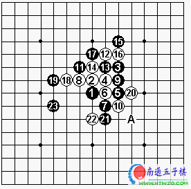

請教意味居重
#1 請教意味居重 作者：news 发表时间：2006-11-22 11:06:37

lafon( 假先 ) vs
奈良秀树，
D3
，
这是台湾第一次与日本的五子棋正式的交流，自己是主办人，在往后的棋会交流中，我知道自己是没有机会可以下到棋的，并且，自己的棋龄也才四年尔尔，对于这些棋界前辈，一直都是很尊重，都是抱以一种学习的心态，所以，在对奕的同时也是以请教的意味居重。
五手两打我选择 j8 与 k9 ，与一开始的想法相同，我不打出 g9 与 i8 两个比较强的点，为的也就是能够在他们身上，看能不能学到些观念；两打之后的变化我都算熟，如图到 23 是我一开始就预设的局，本想说自己持白来应这一局，看日本前辈在这后面是怎么布子攻击，但没想到是自己攻击。
/*760*90，创建于2012-2-9*/ var cpro_id = 'u761865';